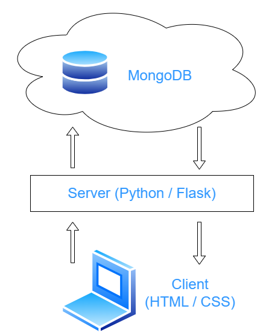

Microblog
View in production Source code
A simple microblogging web app built with Python and Flask. Posts are stored in a MongoDB Atlas database. Users can create, view, and delete posts in real time.
Note: This app is hosted on Render’s free tier and may take up to one minute to spin up after inactivity.

Python
Flask
MongoDB
HTML
CSS
W3.CSS